Основы композиции
Цель урока
Изучить основы и законы композиции, особенности компьютерного дизайна.
Задачи
- познакомиться с принципами и правилами композиции;
- познакомиться с правилами цветового решения композиции, психологией и классификацией цвета;
- познакомиться с видами и особенностями шрифтов, научиться правильно подбирать гарнитуры шрифтов.
Требования к уровню подготовки обучающихся
Должны знать: пространственная связь между плоскостью и предметом, структура плоскости листа, геометрический и композиционный центр композиции, статичное и динамичное равновесие, доминанта, статичное и динамичное изображение.
Должны уметь: создавать грамотные, эстетичные композиции, выделять композиционный центр, соблюдать равновесие, делать акценты.
Этапы работы
Учебный материал. Ознакомьтесь, пожалуйста, с разделами справки.
|
|
Замечание
Любой, даже самый мастерски исполненный рисунок можно испортить неправильной композицией. Композиция — это не только умение грамотно расположить объекты в плоскости рисунка, объединить их в единое целое, но и умение заинтересовать зрителя, привлечь его взгляд к своей работе. Работу над композицией рисунка всегда нужно вести с учетом особенностей человеческого восприятия, и соблюдая основные правила и принципы композиции.
Принцип цельности и неделимости. Композиция должна восприниматься цельно, независимо от количества изображенных на нем объектов. Здесь очень важно именно расположение объектов. Каждый из них производит на человека свое впечатление, и если их не упорядочить, рисунок будет носить хаотичный характер, раздражать и снизит общий эффект от рисунка. Все элементы должны быть связаны по смысловому и пространственному расположению, композиции следует быть разнообразной, но не пестрой.
Композиционные приемы:
* Лаконичность (простота) композиции
* Правило «золотого сечения»
* Направляющие линии в изображении
* Уравновешенность элементов композиции
* Естественное обрамление
* Отделение основного объекта композиции от элементов фона
* Ритм
Задание 1. Перечислите основные принципы и правила композиции.
Задание 2. Создайте в редакторе GIMP новое изображение. Как Вы воспринимаете плоскость листа?
Задание 3. С помощью любого инструмента рисования нанесите на плоскость листа любое пятно, или линию, штрих. Что Вы замечаете?
Задание 4. Пространственная связь между плоскостью и предметом
1) В редакторе CIMP нарисуйте какую-либо форму, например, круг, и разместите его точно в середине листа. Оцените результат.
2) С помощью инструмента Перемещение переместите круг немного вверх, вниз, вправо, влево. Сравните получившиеся изображения.
3) Обратите внимание на особенность работы нашего зрения. Казалось бы, для круга наиболее устойчивое место - это совпадение его центра с геометрическим центром плоскости листа (проведя линии - диагонали из угла в угол листа мы получаем центр листа на пересечении этих линий). Однако, это не все. Из-за оптической иллюзии (глаз несколько переоценивает верхнюю и недооценивает нижнюю часть плоскости) круг воспринимается слегка сдвинутым вниз. Чувствуете, как круг как бы притягивается к основанию квадрата? Круг не чувствуется отчетливо ни в середине, ни ниже, и от этого происходит непонимание его положения, ощущается дисгармония.
4) Как добиться гармоничности? В каком положении должен оказаться круг, чтобы мы воспринимали его в плоскости листа гармонично?
Вывод
Визуальный центр композиции на листе расположен выше геометрического центра.
Задание 5. Структура плоскости листа
Наша плоскость изначально имеет некую условную структуру, даже если на ней пока нет ни одного элемента. Плоскость можно расчленить на оси: горизонтальные, вертикальные, диагональные. Мы получаем структуру.
В центре плоскости (геометрическом центре) все силы этой скрытой структуры находятся в состоянии равновесия, и центральная часть плоскости воспринимается активно, а все остальное - пассивно. Таково ощущение и восприятие условного пространства, так стремится найти покой наше зрение. Понимание это довольно условно, но верно.
1) Создайте композицию из нескольких геометрических фигур. Разместите ее на листе, согласно структурам, изображенным ниже. Затем сместите композиции и сравните результаты.
| 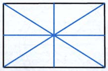 | 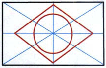 |
| 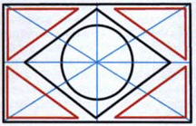 | 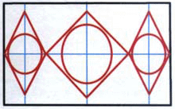 |
| 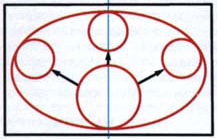 | 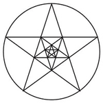 |
Задание 6. Геометрический центр композиции
1) Cоставьте композицию, как на рисунке слева. Что Вы ощущаете? 2) Что здесь нужно изменить? Естественно, уравновесить части композиции, чтобы они гармонично составляли одну большую композицию и являлись частью одного целого. Каким образом сделать так, чтобы нашему зрению было комфортно? |
Всегда нужно стремиться к устойчивому зрительному равновесию всех компонентов композиции в различных ее направлениях: вверх и вниз, вправо и влево, по диагонали. Композиция должна быть гармоничной с любого положения, при любом повороте: поверните свою композицию на 180 или на 90 градусов, она должна также приятно просматриваться, без какого-либо намека на дискомфорт.
Вывод
Композиция считается гармоничной, если в нее не требуется ни вносить новых элементов, ни убирать что-либо из нее. Все участвующие в целостной композиции объекты подчинены одной общей идее.
Задание 7. Cтатичное и динамичное равновесие
Это способы уравновесить композицию, способы создать гармоничность. Способы разные, так как воздействуют на наше зрение по-разному. Допустим, у нас есть две композиции.
| 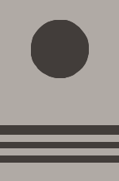 | 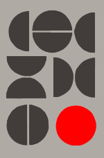 | |
На рисунке расположена композиция, в которой участвуют круг и полосы. Здесь показано статичное равновесие круга и полос. Как оно, по-вашему мнению, достигается? |
На рисунке мы видим динамичное равновесие нескольких полукругов и кругов с выделением доминанты цветом. Как, по вашему мнению, достигается динамичное равновесие? |
Задание 8. Композиционный центр. Доминанта
| 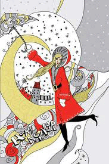 |
1) В композиции слева есть композиционный центр, или доминанта, который является завязкой композиции и которому подчиняются все остальные элементы. Можно сказать больше: все остальные элементы усиливают значимость доминанты и "подыгрывают" ей. В композиции могут присутствовать второстепенные элементы, которые могут также разделяться по значимости. Более значимые - акценты, и менее значимые - второстепенные элементы. Значимость их определяется только по содержанию истории, сюжета композиции, а так все элементы композиции важны и должны быть соподчинены между собой, "закручены" в одно целое. |
Композиционный центр зависит от:
1. Своей величины и величины остальных элементов.
2. Положения на плоскости.
3. Формы элемента, которая отличается от формы других элементов.
4. Фактуры элемента, которая отличается от фактуры других элементов.
5. Цвета. Путем применения контрастного (противоположного цвета) к цвету второстепенных элементов (яркий цвет в нейтральной среде, и наоборот, или хроматический цвет среди ахроматических, или теплый цвет при общей холодной гамме второстепенных элементов, или темный цвет среди светлых...
6. Проработки. Главный элемент, доминанта, более проработан, чем второстепенные.
2) Как Вы считаете, верно ли составлена композиция с точки зрения главного и второстепенного? Что здесь является доминантой? |
| 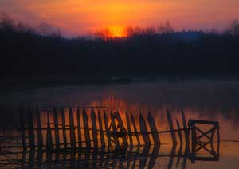 |
3) Охарактеризуйте данное изображение. |
4) Определите доминанту, акценты и второстепенные элементы на картине голландского мастера.
Задание 9. Композиционный и геометрический центры композиции
1) На рисунке слева доминанта (бросающийся в глаза активный элемент) расположена не в центре листа, но ее вес и активность поддерживается множеством второстепенных элементов, располагающихся по диагонали дальше, напротив этой доминанты.
Если провести другую диагональ, то по обе стороны от нее "вес" композиции будет условно одинаков. Композиция уравновешена как по вертикали и горизонтали, так и по диагоналям.
Используются элементы, которые по активности отличаются от предыдущей композиции: активнее расположены и активнее по форме. Хотя и расположены элементарно, по условной сетке и структура композиции проста, но кроме этого композиция имеет динамичное равновесие, так как ведет зрителя по определенной траектории.
2) Определите, где геометрический центр композиции?
Первый свой взгляд зритель обращает на композиционный центр, доминанту, но после ее рассмотрения, и дальше после обзора всей композиции, ваш глаз все же остановился в геометрическом центре, верно? Проверьте сами, проследите за своими ощущениями. Он нашел там "успокоение", самое комфортное место. Время от времени он снова рассматривает композицию, обращая внимание на доминанту, но потом опять успокаивается в геометрическом центре. Потому и называется такое равновесие динамичным, оно вносит движение - зрительное внимание не рассеяно равномерно по всей композиции, а идет по определенному ходу, который создал художник. Ваш глаз найдет в композиционном центре движение, но не сможет там успокоиться. И именно при удачном построении композиции, а именно, правильном использовании геометрического центра, она гармонично просматривается с любого поворота. А композиционный центр, - с него композиция начинает вести диалог со зрителем , - это участок композиции, позволяющий управлять вниманием зрителя и направлять его в нужном направлении.
3) Оцените изображение с точки зрения соблюдения правил и принципов композиции.
Задание 10. Статичная композиция и динамичная композиция
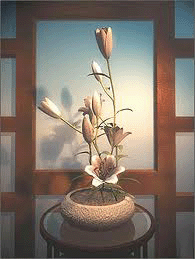1) Эти термины отличаются по смыслу от статического равновесия и динамического, смысл: уравновешивать можно любую по характеру композицию разными способами.
Статичная композиция - это состояние композиции, при котором сбалансированные между собой элементы в целом производят впечатление ее устойчивой неподвижности.
- Композиция, в основе которой можно визуально отчетливо наблюдать использование для построения скрытую структуру листа. В статичной композиции существует условный порядок построения.
- Предметы для статичной композиции выбираются более близкие по форме, по массе, по фактуре.
- Присутствует некая мягкость в тональном решении.
- Цветовое решение строится на нюансах – сближенные цвета.
2) Динамичная композиция - это состояние композиции, при котором сбалансированные между собой элементы производят впечатление ее движения и внутренней динамики.
| 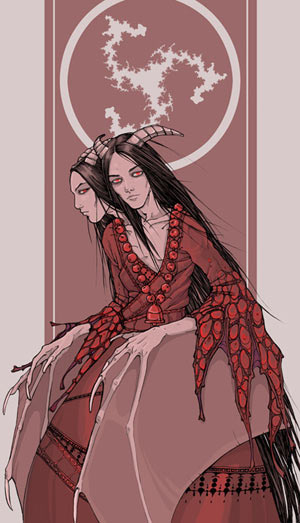 | 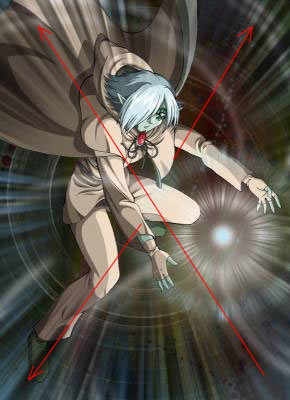 | |
|
3) Определите вид композиции: статичная или динамичная? |
4) Определите вид композиции: статичная или динамичная? Применение какого принципа создает ощущение уравновешенности изображения? |
Выводы
Всегда нужно стремиться к устойчивому зрительному равновесию всех компонентов композиции в различных ее направлениях; композиция должна быть гармоничной с любого положения, при любом повороте; общими массами и цветовыми/тональными пятнами она должна приятно просматриваться без какого-либо намека на дискомфорт.
Задание 11. Оцените две композиции. Верно они составлены?
| 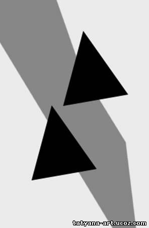 | 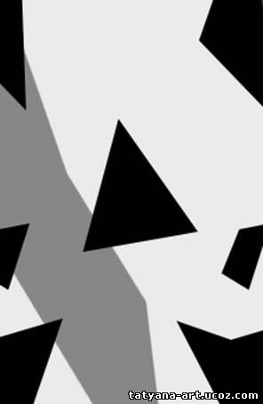 |
Задание 12. Какие правила композиции нарушены в данном изображении?